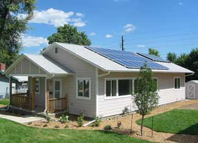

A couple of weeks ago I watched a History Channel documentary about the sun, and it left me with something unexpected. Until then I thought I understood the potential of solar energy. I didn’t. The thing I’d missed was the sheer size of the solar opportunity.
So much solar energy hits our planet that it even threatens to burn out the entire global information infrastructure if precautions aren’t taken during solar flare events. Who would have thought there was an entire branch of the U.S. government dedicated to monitoring the sun and warning about potential energy blasts it sends our way? (Check out the Space Weather Prediction Center, a division of the National Oceanic and Atmospheric Administration.)
But there are exciting new developments related to the sun. They’re happening right here on earth and will affect the way you live, right down to what happens when you flip a light switch.
Photovoltaic (PV) panels turn sunlight directly into electricity, and production and conversion efficiencies of this hardware are skyrocketing. Annual production of PV panels has risen by about 48 percent each year since 2002, but that’s not the most important number in this game.
Industry analysts think the price of photovoltaics will drop to $1 per installed watt by 2010. That’s a magic number because it’s the point at which solar-generated electricity becomes competitive with electricity produced from fossil fuels. Right now, there are enough photovoltaic systems in the world to power 2.4 million modern homes. And while this is still a drop in the bucket compared to the world’s total energy needs, this number will explode as soon as solar power becomes directly competitive with traditional alternatives.
Several countries are right on top of this. In March 2007, Spain began requiring all new, non-residential buildings to generate a portion of their electricity with photovoltaics. China is poised to become the world’s largest producer of photovoltaic cells this year. Germany now boasts more than 300,000 buildings with solar panels. While it’s true that this is mostly a product of government subsidies, they probably won’t be necessary much longer. And as fossil fuels become more expensive and politically troublesome, those early “kick-start” subsidies offered by forward-looking governments will look like good investments indeed.
There’s also a lot of potential for utility-scale solar projects. Large, solar power plants are already in operation, some using photovoltaics and others using solar thermal technologies, which generate electricity using heat.
A lot has to change before significant amounts of solar electricity are available on the grid, but a lot will change. Besides the job of building new solar power plants, there’s the issue of building transmission lines to deliver that power from the sunny regions of the continent where solar electricity can be generated on a large scale.
There’s also the matter of land prices. Where I live there are thousands of acres of flat, bare limestone prairies punctuated by small patches of good farmland. As you’d expect, the limestone “wastelands” are almost worthless right now. But imagine a world where a solar array was as financially lucrative as a coal-fired electrical plant. What better place to build a solar power plant than on a landscape where you can bolt your equipment down to a ready-made bedrock foundation that never gets muddy and never grows grass?
Enough total solar energy shines on the earth during a 40-minute period of time to power the entire world economy for a year. We only need to harness a tiny portion of this sunshine to make a huge difference in the world: environmentally, politically and economically.
For more information on solar power, read Solar Power Could Provide 10 Percent of U.S. Electricity by 2025, Solar Cell Sets World-Record Conversion Efficiency, Easy Solar Power and 970 Trillion kWh of Energy Every Day.
Do you have plans for installing a PV system? How long do you think it will take before solar power provides half of our electricity needs? Share your thoughts in the comments section below.|
 PETE BEVERLY/NREL This Habitat for Humanity house utilizes solar thermal collectors and photovoltaic panels. |
|
|